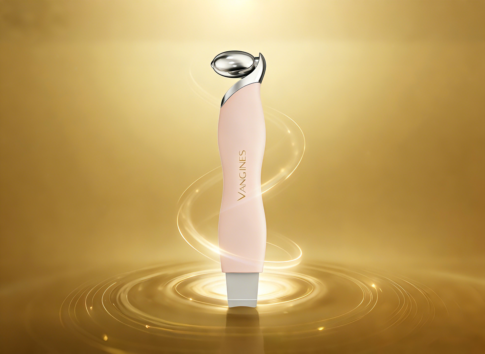

品牌故事

VANGINES诞生于2025年，源于创始人对"简约而不简单"的护肤理念的追求。我们发现，现代女性的化妆台上总是堆满了各种护肤工具，复杂的使用流程让护肤变成了一种负担。
为此，我们集结了工业设计、皮肤科学、人体工学领域的专业团队，耗时18个月，经过5轮产品迭代，终于将冰敷滚轮与黑头铲这两种高频使用的护肤工具巧妙结合，打造出这款二合一产品。
"Care simply, Love Gently"不仅是我们的口号，更是我们的产品哲学。我们坚持选用食品级安全材质，每一个弧度、每一个尺寸都经过精准测算，只为让您在护肤过程中，既能享受高效的护理效果，又能感受到温柔与舒适。
VANGINES相信，真正的轻奢护肤，不是堆砌昂贵的产品，而是用简约的方式，给肌肤最需要的呵护。